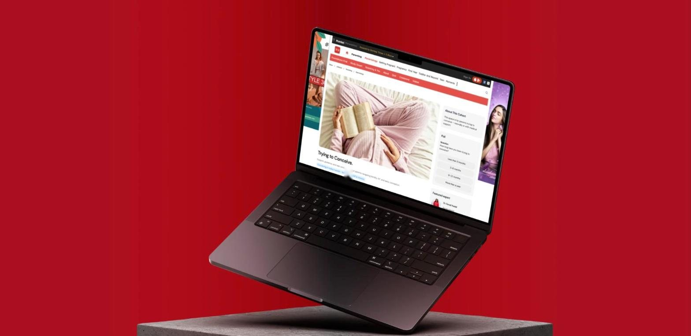
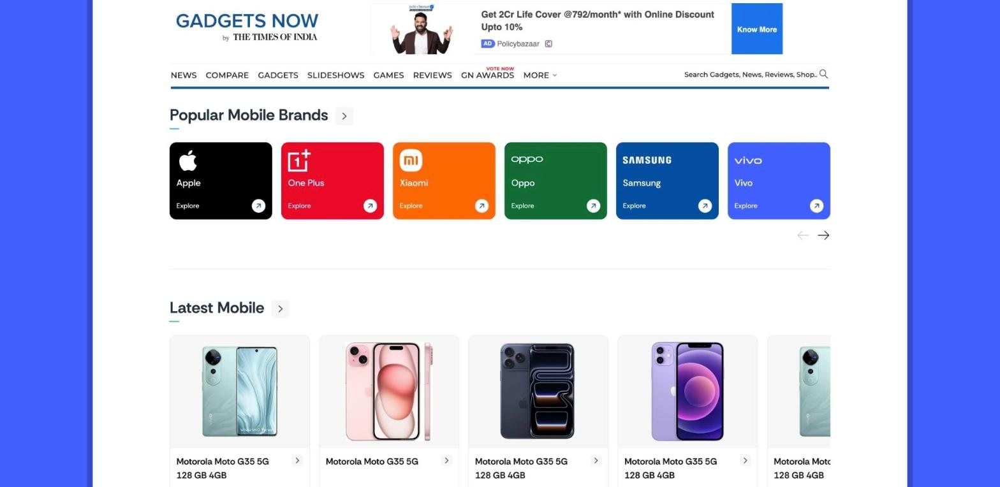
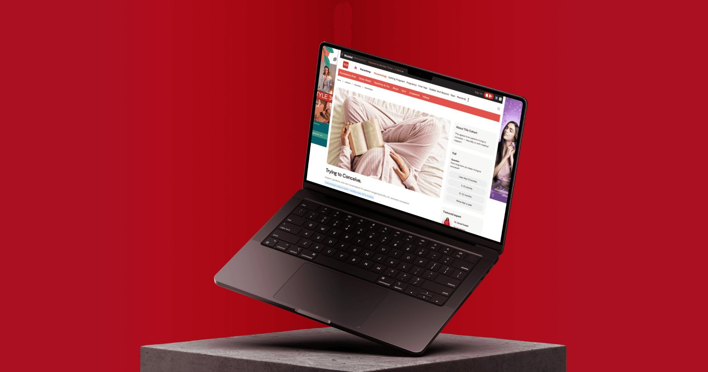
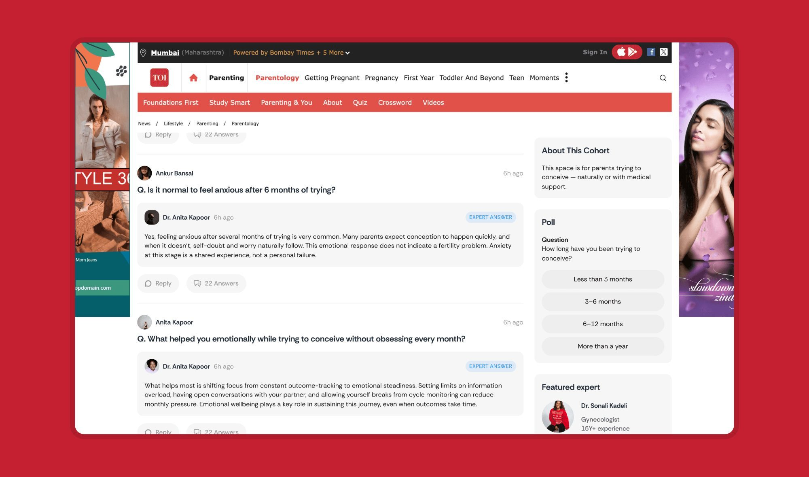
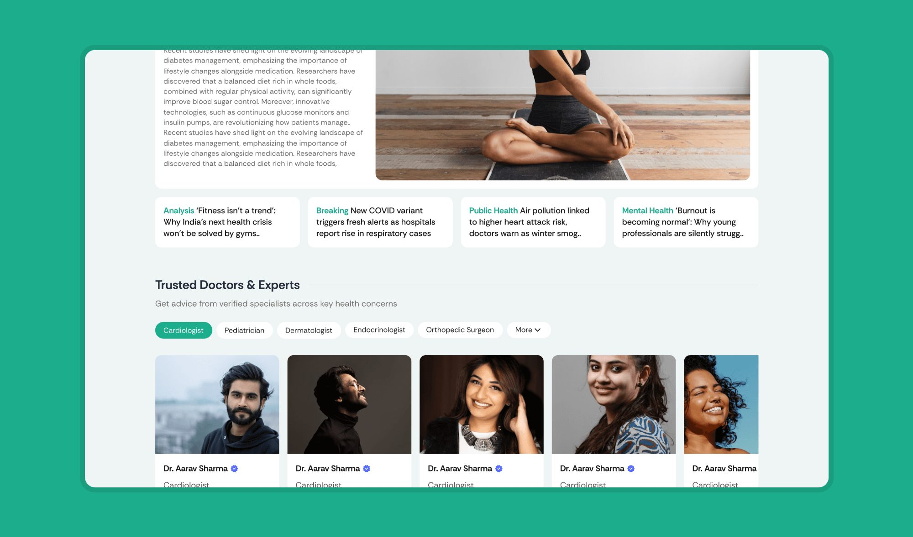
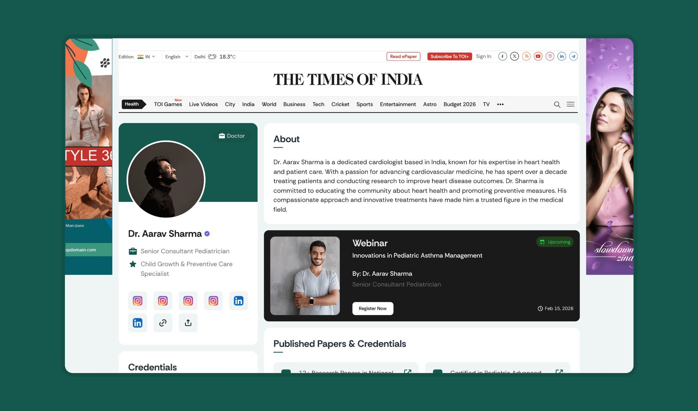
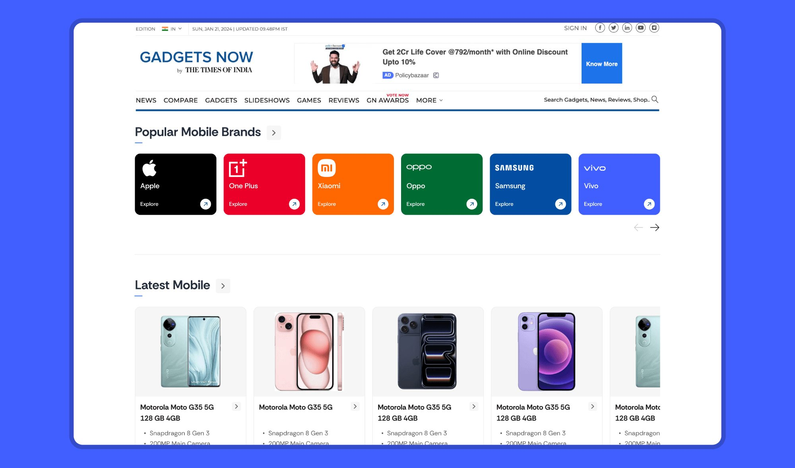
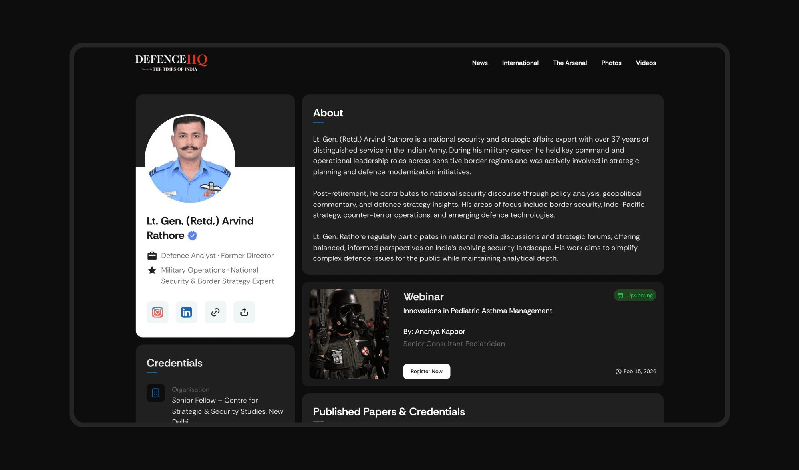

Times of India
Health, parenting, Gadgets Now and Defence HQ, redesigned for millions of daily readers.


Context
India's most visited news platform. I redesigned four verticals, each around how its own audience thinks.
The problem
Every vertical was the same feed of articles, a header and ads. No hierarchy, no reason to stay past the headline.
Research
How
What we learned
Health needs trust
Readers act on it, so experts must be visible.
Tech is shopping
Readers compare before they buy.
Parenting is a journey
Each stage has its own questions.
The design
Parenting, built around a stage
Readers pick their life stage, from trying to conceive to teens. Everything after that is about them.

Cohorts, not comment sections
Real questions, expert answers, polls and a featured expert. Comments became the product.

Health: trust before content
Verified doctors by specialty sit right next to the news. Credibility is visible before the click.

Expert profiles
Credentials, published papers and upcoming webinars on one page. A reason to come back.

Gadgets Now: browse like a shop
Brands first, then the latest phones with key specs. Editorial supports the purchase.

Defence HQ
The same profile system, reskinned dark for a defence vertical. One system, many identities.

Key decisions
One brand, many products
Each vertical got its own structure.
Trust before content
Experts sit next to the advice.
Browse like a shop
Brands and comparisons lead.
Outcome
Want this depth
on your product?
20 minutes. You leave with a plan, even if we don't work together.
Replies within 24 hours.